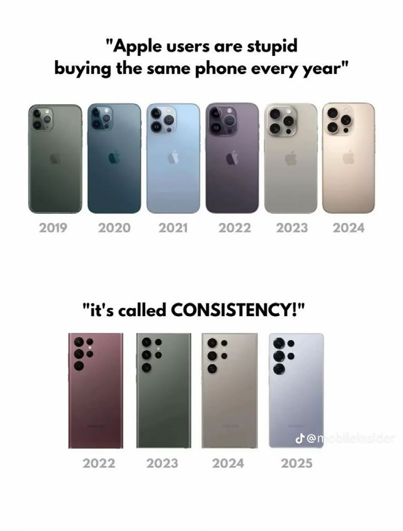
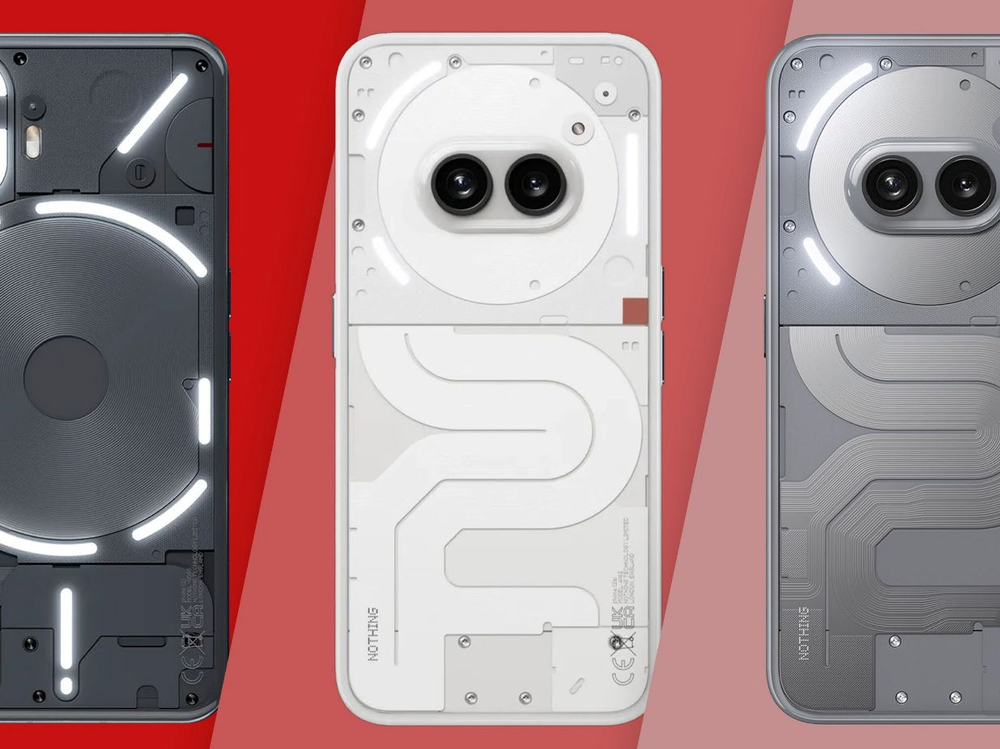
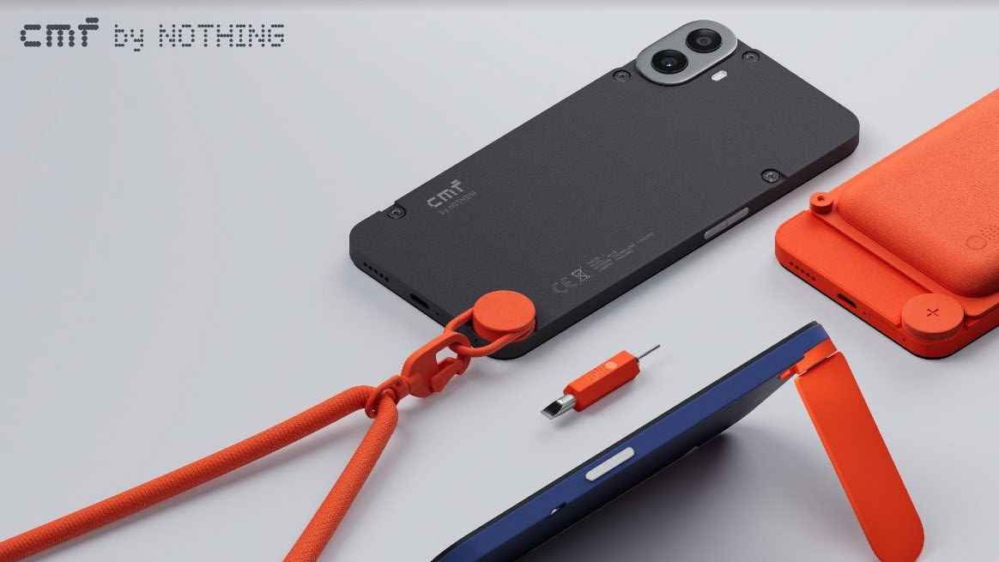
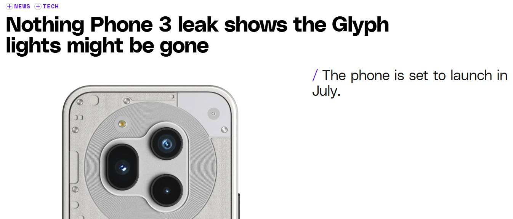

Strip the logos off ten flagship phones and most people couldn't tell you which is which. This is a case study on why that happened, using Nothing and CMF by Nothing as the test case, grounded in an actual interview with someone who works there.

Visual convergence across flagship smartphones. Strip the branding and most devices share the same silhouette and camera arrangement.
Smartphones are some of the most visible objects in daily life, photographed, shared, and seen constantly in public. That should make them rich territory for personal expression. Instead, the market has drifted toward visual sameness: remove the branding and most flagship devices share the same silhouette, the same camera cluster, the same sealed, minimal surface. Research on smartphone identity suggests this matters more than it sounds: when device variation narrows, so does one of the ways people signal taste and identity through an object they carry everywhere.
Nothing and CMF by Nothing position themselves against that drift, transparency instead of sealed surfaces, accessible customisation instead of one fixed finish. This case study asks whether that's meaningful cultural resistance or mostly a branding narrative wrapped around the same commercial logic as everyone else. The answer, working through it honestly, turned out to be both at once.
Institutional isomorphism gives the clearest explanation for why an entire industry converges visually. Mimetic isomorphism: firms copy competitors when facing uncertainty because similarity feels safer than risk. Coercive isomorphism: legal requirements, shared supply chains, and material standards push designs toward the same constraints. Normative isomorphism: designers trained in similar institutions tend to share the same instincts about minimalism and restraint. A senior CMF marketing professional I interviewed for this project put it plainly: even a small design risk can feel destabilising, because consumers expect a certain layout, size, and proportion, and companies converge on whatever feels safe rather than risk that expectation.
Nothing's signature move is exposing what every other manufacturer hides: coils, screws, structural grids, arranged deliberately rather than concealed behind a sealed back. The Glyph interface extends the same logic into light, turning notifications and charging states into something the device communicates visually rather than hides. CMF by Nothing applies the same philosophy more broadly, offering interchangeable cases, textures, and finishes at a price point built for a wider audience.


Transparency was chosen because it communicates a design philosophy, but also because it builds a strong, recognisable brand identity.
That's the honest complication. Authenticity research is clear that authenticity isn't an inherent property of a material choice, it's constructed through narrative and interpretation. Transparency reads as openness and mechanical honesty, but it's also doing branding work at the same time. Both things are true; neither cancels the other out.
A Verge report surfaced a leak suggesting a future Nothing model might drop the Glyph interface entirely. Speculative, but a useful pressure test on the whole argument: even a brand built around expressive design has to weigh that expression against production cost and broader market appeal as it scales. Rebellious design features tend to simplify or disappear under exactly that kind of commercial pressure, which is the less comfortable but more accurate way to think about how long any "different" design language actually survives contact with a mass market.

"The challenge lies in maintaining expressive features while ensuring the product remains commercially viable."
CMF's personalisation model is real, but it's curated personalisation, not unlimited choice. Users select within a structured palette the brand defines, which is genuine expressive agency, just bounded agency. I think that's the most honest place to land on this whole question: Nothing and CMF do meaningfully widen the expressive range available in a flooded, homogenous market, without escaping the commercial logic that produced that homogeneity in the first place. Neither claim cancels the other. If I extended this, I'd want a second interview, ideally with someone on the industrial design side rather than marketing, to see whether the internal account of "why transparency" matches the external one I was given.